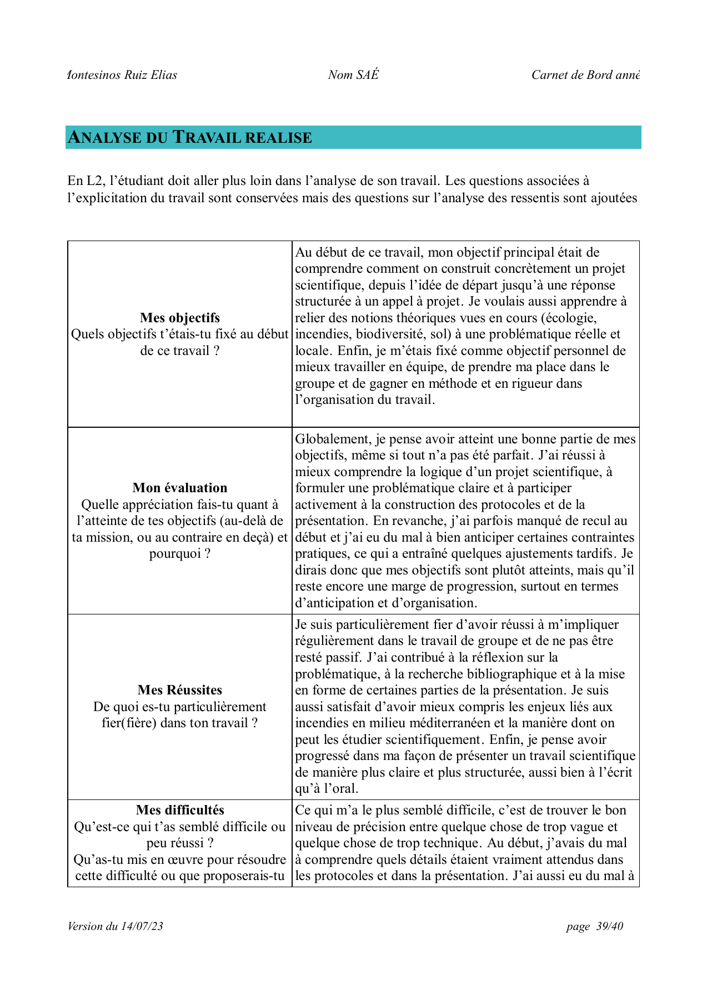
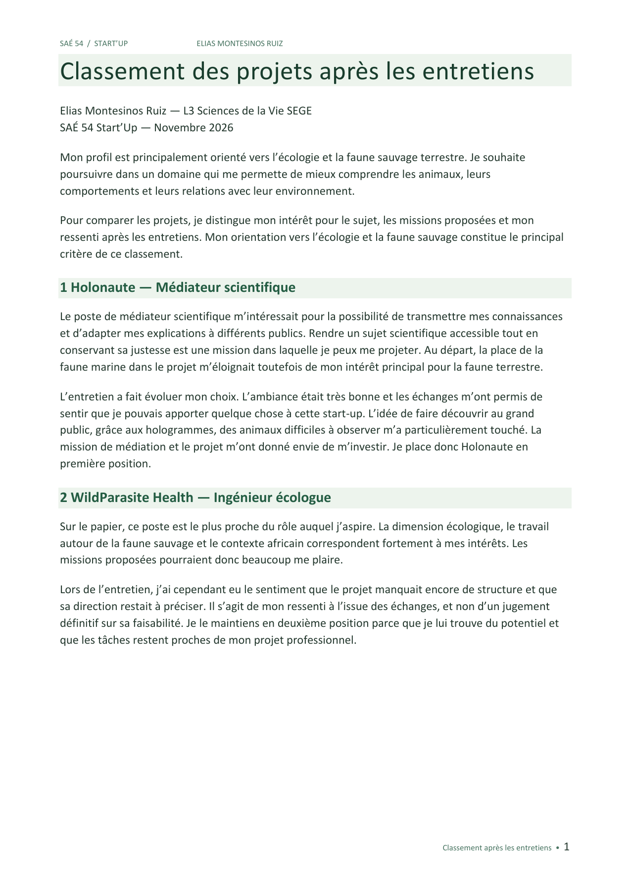

L1 · SAÉ23
L’environnement au cœur de l’action
Carnet retrouvé, mais essentiellement vide : réalisation à documenter.
Compétence · Repères de formation
Organiser un projet dans son contexte, collaborer avec les acteurs concernés et ajuster sa démarche aux contraintes et aux retours.
Université de Toulon · Licence Sciences de la Vie
Ces repères décrivent les attendus de la formation. Ils ne constituent pas une validation de mes acquis. Les extraits du dossier indiquent ce qui est effectivement documenté.
 Agrandir le référentiel
Agrandir le référentielLes travaux de mon parcours
L1 · SAÉ23
Carnet retrouvé, mais essentiellement vide : réalisation à documenter.
L2 · SAÉ341
Mon carnet décrit ma participation à la problématique, à la bibliographie et à la mise en forme de la présentation. Travail collectif.
L3 · SAÉ54
Projet en cours : charte, contexte et rétroplanning collectifs retrouvés. Ma contribution à chaque document reste à préciser.
Mon bilan décrit ma participation à la problématique, aux recherches bibliographiques et à la mise en forme de la présentation. Il évoque aussi les difficultés d’anticipation : je ne m’attribue pas le travail de toute l’équipe.

Agrandir la preuveCe classement personnel d’entretiens montre les critères qui ont guidé mon choix : les missions, mon intérêt pour la faune et ce que les échanges m’ont appris. Il renseigne mon orientation ; il ne prouve pas que j’ai réalisé seul les documents collectifs de WildWay.

Agrandir la preuveCes extraits situent ma participation et mes choix. Ils ne constituent pas encore une démonstration complète de toutes les composantes.